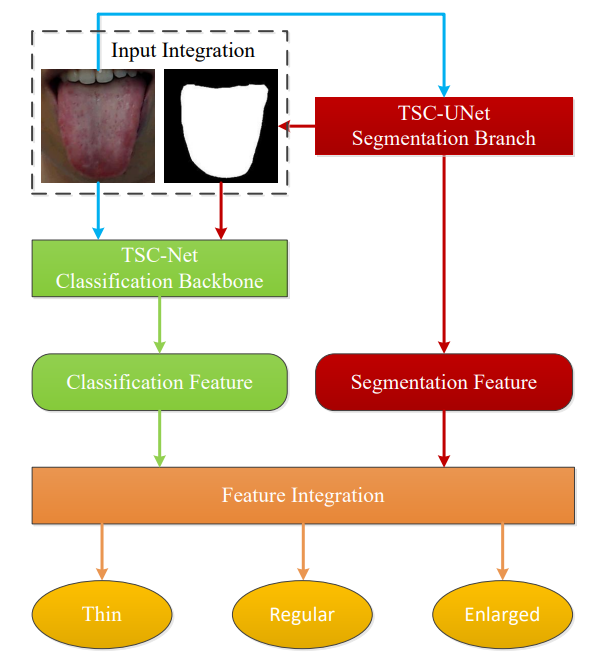
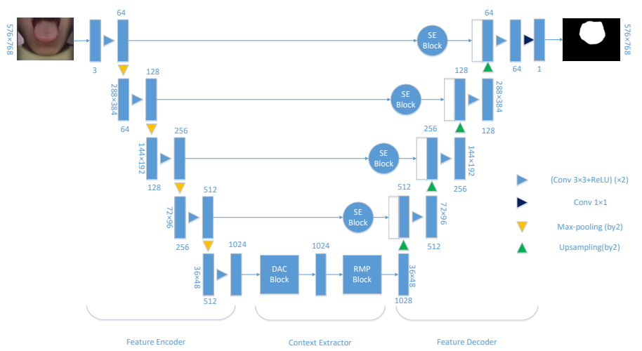

|
Image generated by Stable Diffusion |
Welcome to AI4Autism |
|  | Tongue Size and Shape Classification Fusing Segmentation Features for Traditional Chinese Medicine Diagnosis Yating Huang*, Xuechen Li*, Siting Zheng, Zhonglian Li, Sihan Li, Linlin Shen, Changen Zhou, Zhihui Lai.(* indicates equal contribution) Frontiers in Neuroinformatics (Under review), 2021 |
|  | TU-Net: A Precise Network for Tongue Segmentation Yating Huang, Zhihui Lai, Wenjing Wang. 9th International Conference on Computing and Pattern (ICCPR 2020), 2020 |
Special Scholarship, Shenzhen University, 2019 - 2020
Outstanding Graduate, Fujian University of Traditional Chinese Medicine, 2019
Outstanding Undergraduate Thesis, Fujian University of Traditional Chinese Medicine, 2019
First-Class Scholarship, Fujian University of Traditional Chinese Medicine, 2018- 2019